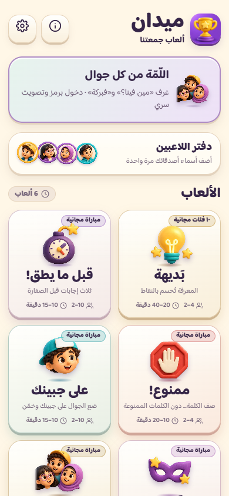
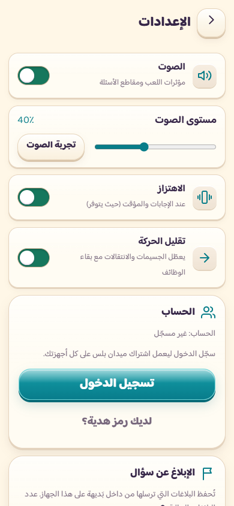
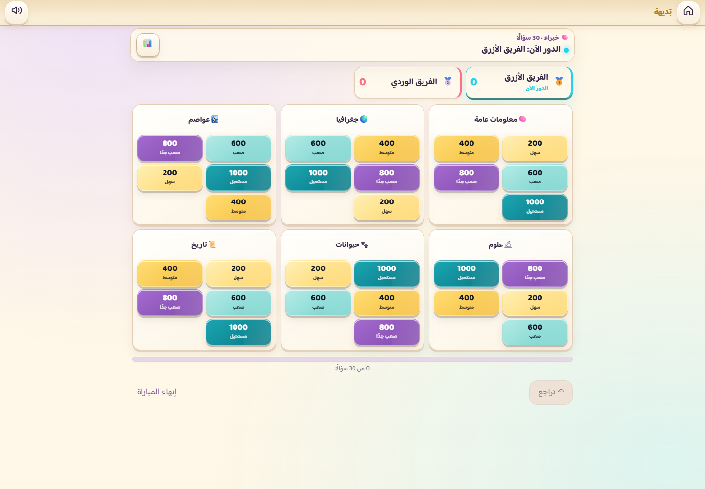
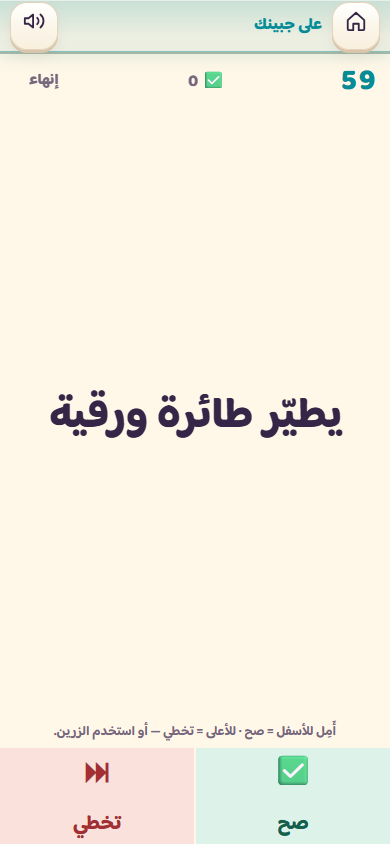

ميدان — تقرير الفحص والتحسين قبل النشر
17–18 سبتمبر 2026 · الموقع وتطبيق iPhone · مرجع الشيفرة 60bfa46
الحالة: نُشرت نسخة الويب المحسّنة والمختبرة، لكنها لم تُعتمد بعد للإطلاق المدفوع. نُشرت أيضًا صفحتا التسعير والاسترداد في18 سبتمبر2026. بقي الدفع في بيئة Sandbox، ولم تُجرَ عملية شراء حقيقية. أهم ما بقي هو اعتماد Paddle وإعداد مزوّدي الدفع للإنتاج، واختبار الشراء والاستعادة على iPhone، واستكمال مراجعة جودة المحتوى. لم تُرفع التغييرات إلى GitHub ولم يُنشر تطبيق iPhone.
تحديث تجهيز Live: أُضيف منتج وخطة بسعر 5 USD شهريًا ورمز واجهة ووجهة إشعارات، بعد جرد الحسابين. النطاق معتمد وأكد المالك حفظ رابط الدفع ووسائله. نُشر مستقبِل Live مستقل بفحص IP/HMAC، وبقي الموقع العام Sandbox والشراء الحقيقي مغلقًا. نجحت 436 اختبارًا؛ تبقى بيانات استلام الأرباح والتحقق من البائع وإطلاق Live خطوات لاحقة. التفاصيل في maydan-live-migration-ar.md.
فُحص المشروع المحلي بعد مزامنته مع المستودع الذي أرسلته. التغييرات على الفرع codex/maydan-release-audit-2026-09-17 داخل [جذر المشروع]. يشمل الفحص المنصة والألعاب الست وبنك بديهة والوسائط والحسابات وخادم الغرف وغلاف iPhone والبناء والتخزين دون اتصال. المراجعة تكشف العيوب المؤكدة أدناه؛ لا تُثبت خلو كل مسار محتمل من الأخطاء ولا صحة كل إجابة تاريخية.
ما تغيّر عمليًا
- الصوت: محرك موحد بمستوى صوت محفوظ، وضبط لشدة الأصوات المتزامنة، ومؤثرات ألطف، وإيقاف عند الخلفية، واستعادة بعد تفاعل المستخدم، وتنظيف للموارد. مؤثرات بديهة ومقاطع أسئلتها تحترم الكتم والمستوى؛ المقاطع تخفض المؤثرات أثناء تشغيلها. هذه مؤثرات مصنّعة برمجيًا، وليست مكتبة موسيقى مسجلة في استوديو.
- الحركة: انتقالات أقصر وأهدأ، وإزالة الغطاء الذي كان يحجب اللعب عند البداية، وتنظيف تأثير الاحتفال، واحترام تقليل الحركة. أُصلح مؤقت «على جبينك» كي يتوقف خلف طلب تدوير الهاتف ويستأنف الوقت المتبقي دون إعادة الجولة.
- التحميل: شاشة بداية مرتبطة بجاهزية الصور والخطوط فعلًا، وشاشة عند فتح اللعبة، وتحضير وسائط جولة بديهة مع عدد الملفات المكتملة وإمكانية المتابعة. لا تبدأ مؤقتات اللعبة خلف شاشة البداية.
- الوسائط: استبدال صور غير مطابقة للإجابات بأصول أوضح، وإصلاح عرض الصور المعتمة في باقة الظلال، وتصحيح بيانات الإسناد، ورفع حدود الجودة. تفاصيل الأعداد وما بقي في ملحق الوسائط.
- الاشتراكات: إصلاح تفعيل الدفع وإعادة المحاولة وملكية الاشتراك وحذف الحساب وStoreKit، وإغلاق التفعيل المحلي برموز منشورة. جدار الدفع يوضح أن Paddle الحالي تجريبي.
- الاعتمادية: إصلاح التحديث الذي كان يقطع الجولة، وتحميل الوسائط دون اتصال، وطلبات المقاطع الجزئية، وإعادة محاولة الملفات. أُضيف فحص تلقائي للتغييرات في GitHub، وحُدّثت أداة البناء لإزالة ثغرتها المعروفة.
تسهيل أسئلة 600 و800 و1000
البنك الحالي 18,685 سؤالًا في 78 فئة؛ يشمل التعديل 11,214 سؤالًا في الشرائح الثلاث مع بقاء النقاط والمعرّفات والإجابات. تُعرض مساعدة خفيفة عبر موضوع السؤال عندما لا يكشف الإجابة، أو عدد كلمات الإجابة الأساسية بحسب النوع. استُبعدت الموضوعات غير الموثوقة في باقتين من التلميح. وخُفّف الجزء الزائد من التكبير والتمويه والتعتيم بمقدار 10% في المؤثرات المعنية.
هذا تطبيق لتسهيل العرض والمساعدة، وليس إعادة صياغة تحريرية لجميع الأسئلة. لا أعتبره إثباتًا أن صعوبة الأسئلة انخفضت 10% لدى اللاعبين؛ إثبات ذلك يحتاج مقارنة نسبة الإجابات الصحيحة ووقت الإجابة قبل التعديل وبعده. لا تزال مراجعة الصياغات والحقائق نفسها بندًا مستقلاً.
الأخطاء المؤكدة التي أُصلحت
| الأثر السابق | المعالجة |
| دفع ناجح قد لا يُفعّل بعد عطل إشعار الدفع | تأكيد معالجة الإشعار بعد حفظه، والسماح بإعادة المحاولة |
| منتج Paddle غير معروف قد يمنح Plus، أو ربط الدفع ينتقل لحساب آخر | حصر المنتجات وتثبيت مالك الاشتراك والعميل |
| حذف الحساب بينما يستمر الخصم أو بقاء حذف جزئي | اشتراط نجاح إيقاف تجديد Paddle، وحذف بيانات الحساب بمعاملة ذرية |
| إعلان نجاح الشراء قبل وصول التفعيل للخادم | انتظار الاستحقاق وعرض حالة الانتظار، مع منع شراء مكرر خلال الانتظار |
| إنهاء معاملة StoreKit قبل تثبيت الاستحقاق | إبقاؤها معلقة حتى تأكيد الخادم وإرسالها مجددًا عند العودة |
| أخطاء جمهور Apple وبيئة Sandbox واستعادة المعاملات القديمة | فصل الجمهور والبيئة ومعالجة تاريخ التوقيع |
| رموز هدية مكشوفة وتفعيل محلي دون حساب | قبول على الخادم فقط عبر جلسة؛ يلزم إصدار رموز سرية جديدة |
| مؤثرات صوتية قديمة تعود بعد إلغاء الكتم | إيقاف الأصوات وإدارة المستوى والسياق والموارد |
| مؤقت يبدأ خلف شاشة التحميل أو تنبيه التدوير | ربط بدء اللعبة بالجاهزية وإيقاف الجولة خلف التنبيه |
| تحديث الموقع يعيد تحميله أثناء المباراة | تفعيل النسخة الجديدة دون إجبار الصفحة المفتوحة على التنقل |
| نجاح وهمي لتحميل مقطع أو تجهيز اللعب دون اتصال | انتظار جسم الاستجابة، ورفض HTML، وعدم إعلان جاهزية دون مخزن فعلي |
| مقاطع مخزنة لا تدعم طلبات Safari الجزئية | استجابات206 و416 صحيحة للملفات المخزنة |
| فقد الكتم والمستوى بعد فشل ملف وإعادة إنشائه | ربط التحكم بعنصر الوسائط الفعلي عند إعادة تركيبه |
| وصف خصوصية لا يذكر إرسال بيانات الغرف المجهولة | توضيح بيانات الغرف ومحدد الطلبات ومعرّفات الدفع وحدود حذف الحساب |
ما يمنع الاعتماد النهائي، بالترتيب
- البيع الحقيقي غير مفعّل بعد. الخادم المنشور أعلن إعداد Paddle Sandbox عند فحصه. يلزم حساب إنتاج مفعل وأسعار ومفاتيح وإشعارات إنتاج ونطاق معتمد، ثم اختبار كامل. مفاتيح Sandbox والإنتاج منفصلة حسب دليل Paddle للإطلاق.
- iPhone لم يُبنَ أو يُختبر فعليًا هنا. أُصلح مسار StoreKit وجُهزت ملفات الويب، لكن الجهاز الحالي Windows. يلزم Xcode وتوقيع وبناء TestFlight وتجربة شراء واستعادة وتجديد وإلغاء واسترداد وانقطاع الشبكة. التجهيز المحلي لا يعادل نجاح بناء Swift أو موافقة App Store.
- جودة المحتوى تحتاج اعتمادًا تحريريًا. نجاح المدقق يعني سلامة البنية والملفات والمعرّفات؛ علامة verified ليست مصدرًا للحقيقة. توجد ملاحظات تاريخية315 في41 فئة تحتاج إعادة فرز مقابل النسخة الحالية، ولا تُعد315 خطأً مؤكدًا حاليًا. توجد أيضًا 4 باقات غير مكتملة وفق الحد التحريري48 سؤالًا لكل خانة؛ التفاصيل في الملحق.
- قفل المحتوى المحلي قابل للتجاوز لدى مستخدم تقني. البنك المدفوع داخل حزمة العميل وبعض الاستحقاق والتجربة مخزن محليًا. حماية أقوى تتطلب تسليم المحتوى من الخادم بعد التحقق، مع قرار صريح بشأن اللعب دون اتصال. اختبارات القفل الحالية تثبت الاستخدام الطبيعي.
- المراقبة واستعادة الأعطال تحتاجان تجهيزًا تشغيليًا. إعداد observability الحالي معطّل؛ لا توجد مطابقة دورية للاشتراكات تعوض فقد إشعار نهائيًا. يلزم تنبيه لفشل الدفع/الخادم، ومراقبة وصول الإشعارات، واختبار استعادة نسخة قاعدة البيانات قبل إطلاق مدفوع واسع.
أفضل التوصيات للمشروع
- أعطِ الاشتراك قيمة مستمرة واضحة: دفعات أسئلة ووسائط موثقة، وصيانة وتصحيحات دورية. إذا كان المنتج مجرد فتح مكتبة ثابتة، فقيّم خيار شراء دائم بجانب الاشتراك. Apple تشترط قيمة مستمرة للاشتراكات؛ مشاركة الاستحقاق بين الموقع والتطبيق تحتاج توفير المنتجات داخل التطبيق أيضًا. إرشادات Apple، القسم3.1.
- اجعل «صورة تطابق الإجابة ومصدر واضح» شرط قبول كل سؤال وسائط؛ الدقة العالية وحدها لا تصلح صورة خاطئة. ابدأ بأفضل الحزم المراجعة، ثم وسّع المحتوى وفق تقرير الجودة. احتفظ بإسناد المصور وترخيص الصورة، حتى عندما يكون الشيء المصوَّر في الملك العام.
- لا تجعل حجم اللعبة وحده هدفًا. رُفعت الحدود إلى256KB للصورة و160KB للصوت و64MB للحزمة، مع مصادر صور حتى1280px وصوت حتى128kbps دون تكبير صور صغيرة اصطناعيًا. قِس زمن البداية والذاكرة على هاتف متوسط، وحمّل بنك الفئات والمقاطع عند الطلب إذا أصبحت البداية بطيئة.
- اختبر تجربة عربية حقيقية: فرق تلعب على هاتف واحد، وعلى أجهزة متعددة، واتصال ضعيف، وانتقال للخلفية، ومكالمة واردة، وBluetooth، وVoiceOver، وتكبير الخط. فحص Chrome بالحجم المحمول ليس جهازiPhone حقيقيًا.
- لا تربط حساب Apple بحساب Google تلقائيًا بسبب تشابه البريد. استخدم الحساب نفسه عبر الأجهزة الآن، ثم أضف ربط هويات موثقًا إن أردت انتقالًا أسهل.
- وحّد وصف الإصدار في وثائق iOS مع الإصدار الفعلي قبل الرفع، وحدد الأسعار من إعدادات المتاجر، ولا تعرض نسبة توفير إلا بعد حسابها من السعرين الحقيقيين.
نتائج التحقق وحدوده
| الفحص | النتيجة |
| اختبارات نسخة نشر صفحات التسعير والاسترداد | 392 اختبارًا؛ 0 فشل |
| فحص بنية البنك | نجح؛78 ملفًا، مع تحذيرات تحريرية موثقة |
| فحص ثغرات الاعتماديات | صفر ثغرات معروفة في نتيجة npm audit وقت الفحص |
| اختبار المتصفح العام | 96/96، هاتف390×844 ومكتب1440×1000، بلا أخطاء صفحة أوHTTP في النطاق |
| اختبار الحسابات وجدار الدفع بالمتصفح | 35/35 باستجابات ومزوّدين اختباريين، دون شراء حقيقي |
| فحص الوسائط بالمتصفح | 18/18: التحميل، المساعدة، الصوت وإعادة محاولته، الكتم، والتحضير والعمل دون اتصال |
| أخطاء تسجيل الدخول — تحديث18 سبتمبر | 6/6 بالمتصفح، مع تحقق إضافي في المعاينة الكاملة علىlocalhost |
| التحويل من دفع الاختبار إلى الإنتاج ورسائل الانتظار | 6/6 بالمتصفح، باستجابات اختبارية ودون شراء حقيقي |
| صفحة رابط الدفع الافتراضي | 8/8 بالمتصفح، إضافة إلى اختبار تجاوز مخزن اللعبة |
| بناء Cloudflare ونشر الموقع | نجح البناء والنشر إلى النطاق الحالي؛ بقي Paddle في Sandbox |
| صفحات التسعير والاسترداد | تعمل بلا JavaScript على الهاتف والمكتب؛ فُحص تحديث التخزين دون اتصال، والروابط العامة تعيد الصفحات الصحيحة |
| تجهيز iOS | تحقق نسخ ملفات الويب؛ ليس بناء Xcode أو اختبار جهاز |
| حجم مستند البداية | 7.35MiB قبل الضغط، 1.85MiB مع gzip |
السجلات التفصيلية ونتيجة فحص الوسائط الإضافي في مجلد evidence المرفق. لا تشمل هذه النتائج اختبار ضغط إنتاج كبيرًا، أو اختراقًا مستقلًا، أو سماعًا بشريًا لكل مقطع، أو التحقق من حقيقة كل سؤال.
تحديث تسجيل الدخول — 18 سبتمبر
المعاينة علىlocalhost:3000 تخدم ملفات اللعبة فقط، ولذلك كانت طلبات الدخول تصل إلى404. كما كانت الواجهة تتجاهل فشل فحص الخادم ثم تنتقل إلى رابط الدخول المفقود، وتغلق نافذة الخطأ. أُصلح هذا المسار: يوقف أي فشل الانتقال، وتبقى النافذة والرسالة ظاهرتين، ولا يبدأ الدخول بمزوّد أعلن الخادم أنه معطّل. خادم المعاينة يعيد الآنPREVIEW_ONLY وتعرض الواجهة رابطًا واضحًا إلى إعدادات الموقع المنشور.
اختُبر الإصلاح على المعاينة الكاملة وعلى6 حالات متصفح معزولة، ونُشر ضمن تحديث الموقع. والتحقق من الخدمة المنشورة أثبت أن بدء الدخول يصل إلى صفحتيGoogle وApple؛ لم يُستكمل تسجيل دخول بحساب المستخدم أو اختبار التبادل النهائي. لم نُضفlocalhost إلى الأصول المسموحة للإنتاج، ولم نغيّر مفاتيح المصادقة. الحسابات الحقيقية تُستخدم من الموقع المنشور؛ معاينة محلية تدعمها تحتاج خادمًا وتهيئة مصادقة منفصلة.
تجهيز الدفع الإنتاجي — 18 سبتمبر
حدد المالك 5 دولارات أمريكية شهريًا. أُضيف دعم خطة شهرية منفردة وإخفاء الخطة السنوية غير المتاحة. فحص مشروع سطح المكتب والخدمة المنشورة يؤكد Sandbox مع وجود أسرار Paddle محفوظة. أكد المالك أنه يدخل إلى حساب الإنتاج، لكن التحقق أو اعتماد الموقع غير مكتمل؛ لا حاجة لإنشاء حساب جديد. لم ننشئ سعرًا حقيقيًا في Paddle ولم تتغير إعدادات Sandbox المنشورة.
أُصلح تداخل الاشتراكات التجريبية مع الإنتاج: تُفصل استحقاقات Paddle وعملاؤه وأحداثه بحسب البيئة، وتُحدّث حالة الحساب من الخادم قبل الشراء. الترحيل0002 يضيف جدولًا ويحفظ السجلات القديمة. وأُضيف الترحيل0003 لحجز محاولة دفع واحدة للحساب عبر الخادم؛ لا يُنشأ طلب ثانٍ تلقائيًا إذا ضاع رد المعاملة، ويمكن استعادة معرّفها من إشعار Paddle الموقّع. يحمي الحجز أيضًا الربط أثناء حذف الحساب. طُبق الترحيلان بنجاح على قاعدة الموقع بعد تصدير نسخة احتياطية خاصة، ثم نُشرت الشيفرة المتوافقة. لم تُضمّن بيانات النسخة الاحتياطية في المرفقات.
أُضيفت صفحة pay.html لروابط إكمال الدفع وتحديث البطاقة، مع استثنائها من مخزن صفحة اللعبة. لا تمنح رسالة النجاح في المتصفح اشتراكًا؛ يظل الخادم مصدر التفعيل. المحاولة غير المحسومة قد تحتاج مراجعة دعم بدل إعادة الدفع، والاشتراك الموقوف مؤقتًا لا يُعد ملغى نهائيًا.
نُشرت صفحة التسعير بسعر ويب5USD شهريًا، وسياسة الاسترداد وروابطهما من اللعبة. السياسة توضح طلب الاسترداد وفق شروط Paddle وApple والحقوق القانونية، ولا تعد بضمان أو مهلة إضافية. تظهر الصفحات أن البيع الحقيقي لم يُفعّل بعد. يلزم استكمال تعريف المشغّل وفق بياناته الحقيقية ومتطلبات Paddle، واعتماد حساب الإنتاج والنطاق، وإعدادات Live كاملة قبل اختبار البيع الحقيقي. تفاصيل الخطوات في ملف maydan-production-payment-ar.md المرفق. تجهيز Paddle لا يستكمل إعداد App Store Connect أو اختبار iPhone.
إصدار الموقع المنشور: d47e6893-7717-4e81-9119-2262852be537. نُشر العامل الكامل maydan-game؛ لم يُنشر عامل maydan-rooms منفصلًا في هذه الخطوة. بقيت متغيرات الدفع والأسرار كما كانت في Sandbox.
خطوات اعتماد الإطلاق
- اعتماد الباقات التي اكتملت مراجعتها بصريًا وتحريريًا، وإغلاق الشكوك الواردة في ملحق الوسائط.
- إعداد بيئتي Apple وPaddle وتجربة دورة الاشتراك كاملة بالحساب نفسه على الويب وiPhone.
- بناء التطبيق وتوقيعه علىMac، واختبار تحديثه فوق النسخة المنشورة حتى لا تضيع محفوظات اللاعبين.
- تفعيل المراقبة والنسخ الاحتياطي، ومراجعة بيانات المتجر والشروط والخصوصية وفق الخدمة الفعلية.
- تجربة محدودة مع لاعبين، وقياس الأخطاء وسرعة البدء وصعوبة الشرائح، ثم اعتماد النشر.
تُرفق أدناه نتائج المراجعات المتخصصة بأدلتها ومساراتها. كُتبت الملاحق قبل النشر؛ أي عبارة فيها عن عدم النشر تصف وقت المراجعة الأولية، والحالة الأحدث موضحة أعلاه. أرقام الأسطر في الملاحظات قد تتغير بعد تعديلات لاحقة.
الملحق 1
مراجعة الاشتراكات والحسابات — 2026-09-17
المشروع: [جذر المشروع]، بعد التحديث إلى 60bfa46، على فرع المراجعة المحلي. لم تُنشر التغييرات، ولم تُجرَ عملية شراء حقيقية أو تغيير أسعار.
أخطاء مؤكدة أُصلحت
- ضياع التفعيل بعد عطل webhook: كانت علامة event_id/notificationUUID تُحفظ قبل نجاح تحديث قاعدة البيانات/إعادة الجلب من Apple، فتُهمل إعادة المحاولة الصحيحة. أصبح التأكيد بعد نجاح المعالجة؛ التحديثات تبقى قابلة للإعادة ومرتبة زمنيًا. server/accounts/router.mjs:262 وapple.mjs:165.
- استحقاق من منتج Paddle غير معروف أو حالة موقوفة: يُسمح فقط بمعرّفي أسعار Plus؛ canceled/paused لا يبقيان تاريخ صلاحية مستقبليًا. تُفحص جميع عناصر الاشتراك، لا أول عنصر فقط. paddle.mjs:111.
- نقل ملكية الاشتراك/عميل الفوترة: قيد التحديث يثبت صاحب الاشتراك، وربط customer_id لا يستخدم INSERT OR REPLACE الذي كان قادرًا على إسقاط ربط حساب آخر. db.mjs:94 و110.
- حذف الحساب مع استمرار خصم Paddle: لا تُحذف البيانات قبل تأكيد وقف التجديد وإبطال رمز Apple الموجود. فشل التأكيد يبقي الحساب لإعادة المحاولة. كذلك أصبح حذف جداول الحساب دفعة D1 ذرية مع اختبار تراجع كامل عند فشل منتصفها. router.mjs:284 وdb.mjs:118.
- الواجهة تعلن التفعيل قبل وصول webhook: تنتظر تأكيد اشتراك Paddle المدفوع من الخادم؛ عند التأخر تعرض انتظارًا وزر تحديث وتحظر تكرار الشراء خلال الانتظار. المنحة القديمة لا تُعد تأكيدًا للدفع الجديد. src/shared/account/purchases.js:5 وAccountProvider.jsx:284.
- StoreKit ينهي المعاملة قبل حفظ الاستحقاق: لا يحدث finish إلا بعد نجاح الحفظ. توجد إعادة إرسال للمعاملات غير المنتهية بعد الإقلاع/الدخول/عودة الاتصال/العودة للتطبيق. StoreManager.swift:113 و122، GameViewController.swift:336، AccountProvider.jsx:459. التغيير محمي باختبار عقد/ترتيب، لكنه لم يُترجم بـXcode على Windows.
- جمهور Apple خاطئ عند وجود الويب والتطبيق معًا: سر العميل صار يطابق client_id المطلوب، وتحقق الهوية يرفض جمهور المنصة الأخرى. apple.mjs:32 و67. OAuth الآن يرفض nonce الناقص ولا يستخدم سر state عامًا افتراضيًا في الإنتاج، session.mjs:96.
- Sandbox يُستعلم عنه في الإنتاج: تُختار بيئة App Store Server API من المعاملة الموقعة، مع fallback مضبوط عند غياب البيئة وخطأ 4040010. apple.mjs:94.
- استعادة معاملة قديمة موقعة بشهادة انتهت لاحقًا: فحص صلاحية الشهادة عند signedDate الصحيح، مع رفض التاريخ المستقبلي غير المقبول. x509.mjs:153، مطابق لنمط التحقق المحلي في مكتبة Apple الرسمية.
- مفتاح هدية دائم منشور وتفعيل محلي بلا حساب: أُزيلت كل البصمات المقبولة من حزمة العميل، ومنع التفعيل المحلي، وحذف تخزين الرمز الخام؛ القبول فقط عبر جلسة وREDEEM_CODE_HASHES السرّي على الخادم. المنح والاشتراكات المسجلة سابقًا في D1 لم تُلغَ. config.js:21، AccountProvider.jsx:373، store.js. الرموز المحلية السابقة غير المزامنة تحتاج إعادة منح مصرح بها، والرمز القديم المكشوف يجب ألا يعاد استخدامه.
- عنوان فوترة مختلق عند غياب بريد الهوية: يترك Paddle Checkout جمع البريد الحقيقي. وتُقبل توقيعات h1 المتعددة وقت تدوير سر webhook. paddle.mjs:33 و101.
- إدارة الاشتراك من متجر خاطئ/حذف محلي مزعوم: توجيه الإدارة حسب مصدر الاشتراك؛ حذف الحساب دون اتصال يعرض فشلًا بدل ادعاء حذفه. أُزيل ادعاء «الأوفر» الذي لم يكن مبنيًا على الأسعار الفعلية. جدار الدفع يعرض تنبيه Sandbox واضحًا: لا تُخصم مبالغ حقيقية والاشتراك تجريبي؛ رسالة النجاح تؤكد ذلك أيضًا.
ما يلزم قبل الإطلاق المدفوع
- فحص الجذر للخادم المنشور أعاد accounts:true، وApple/Google معلنين، لكن Paddle Sandbox. وجود المعرّفات لا يثبت دخولًا حقيقيًا أو صحة جميع الأسرار.
- إعداد Paddle Production (حساب/أسعار/مفاتيح/رمز عميل/سر webhook/موافقة النطاق/الدفع الافتراضي) ثم اختبار دورة شراء وإلغاء/استرداد حقيقية في Sandbox. لم نغيّر الأسعار أو إعدادات الحسابات الخارجية.
- App Store Connect: مجموعة اشتراك ومنتجا plus.monthly وplus.yearly، الاتفاقيات والضرائب، مفاتيح Server API وSign in with Apple، إشعارات V2، حسابات Sandbox/TestFlight. بناء وتوقيع Xcode وتجربة iPhone فعلية ضروريان.
- تدفق دخول Apple الذي يسمح بالمتابعة دون مفتاح تبادل يبقى fallback قديمًا؛ بلا refresh token لا يمكن إثبات إبطال التفويض القديم عند حذف الحساب. الإنتاج يحتاج اختبارًا يؤكد حفظ الرمز وإبطاله.
- اختبارات قبول: شراء واستعادة وتجديد وإلغاء واسترداد وسحب الاستحقاق، تبديل جهاز، فشل الشبكة بعد الدفع، webhook متأخر/مكرر، حذف حساب مع اشتراك وتجربة حساب Apple ذي بريد مخفي.
حدود وتحسينات باقية
- الحماية التجارية ليست مقاومة للتلاعب: النسخة المخزنة للاستحقاق، والعلامات المحلية للتجربة، وبنك الأسئلة المدفوع داخل حزمة الويب يمكن فحصها/تعديلها. الاختبارات تثبت تدفق المستخدم الطبيعي؛ حماية المحتوى القوية تحتاج تسليمه من الخادم بعد التحقق، مع قرار واضح بشأن اللعب دون اتصال. إنشاء الغرف المجهول مسموح حاليًا حسب تصميم المنتج ويمكن تجاوز حد التجربة بإزالة الهوية.
- لا يوجد ربط حساب Apple بحساب Google مختلف؛ يجب استعمال هوية الدخول نفسها على الأجهزة. العملاء المشتركون في البريد لا يُنقل ربط فوترة أحدهم إلى الآخر؛ يلزم تدفق ربط هويات مصرح به إذا كان ذلك مطلوبًا.
- لا توجد مطابقة دورية للاشتراكات مع مزوّدي الدفع بعد فقد webhook نهائيًا؛ أضف مراقبة وتنبيهات ومهمة reconciliation. مهمة التنظيف الحالية ليست هذه المهمة.
- تحقق شهادات Apple محلي مثبت الجذر ولا ينفذ OCSP. رمز تحديث Apple مخزن في D1، ويحتاج وصولًا مقيدًا ونسخًا احتياطية محمية؛ تشفير الحقل بمفتاح مستقل تحسين إضافي.
- رموز الهدايا السرية الحالية جماعية وطويلة المدة وقابلة للاستعمال على أكثر من حساب؛ ليست نظام كوبونات مباعة لمرة واحدة أو محدود العدد. يلزم جدول إصدار/استخدام/انتهاء لذلك.
- المعاملات المصنوعة محليًا في Xcode بشهادة StoreKit Test لن يقبلها خادم يثبت جذر Apple الحقيقي؛ الاختبار الكامل يستخدم Apple Sandbox.
التحقق
- 78/78 اختبار حسابات واشتراكات ناجح، بما فيها workerd حقيقي وD1 بمزوّدين وهميين واختبارات فشل متعمد؛ وبعد إضافة تنبيه Sandbox نجحت اختبارات الواجهة السبعة مجددًا (إجمالي الاختبارات الآن 79).
- 35/35 فحص Playwright في Chrome على قياس هاتف، دون أخطاء صفحة: قفل 68/78 فئة، تسجيل الدخول، المنح، التجربة، الغرف، الخروج، منع الهدية المجهولة/المحلية، وتفعيل الهدية السرية من الواجهة دون تخزين الرمز.
- الشواهد واللقطات: [مجلد العمل المحلي]/work/paywall-e2e/results.json والملفات المجاورة. نُقلت من المستودع، وأُغلقت خوادم الاختبار تلقائيًا حتى عند الفشل.
- تعليمات تشغيل محدثة في docs/ACCOUNTS.md وios/README.md. التغييرات لم تُعتمد في commit ولم تُنشر.
مصادر: https://developer.paddle.com/webhooks/about/how-webhooks-work/ ، https://developer.paddle.com/build/subscriptions/provision-access-webhooks/ ، https://developer.paddle.com/webhooks/about/signature-verification/ ، https://developer.paddle.com/api-reference/transactions/create-transaction/ ، https://developer.apple.com/documentation/storekit/transaction/finish%28%29 ، https://developer.apple.com/documentation/appstoreserverapi ، https://github.com/apple/app-store-server-library-node/blob/main/jws_verification.ts
تحديث 2026-09-18: الفصل بين Sandbox وLive وحماية محاولة الدفع
- أكد المالك وجود حساب Paddle إنتاجي يمكنه دخوله؛ الاعتماد أو التحقق غير مكتمل. إعداد المشروع والموقع الحي ما زال Sandbox. الخطة التجارية المعتمدة 5 USD شهريًا فقط؛ لا سعر سنوي معتمد. لا نشر ولا ترحيل بعيد ولا تغيير قيم أسرار في هذا العمل.
- 0002 يفصل عملاء Paddle حسب البيئة دون حذف الربط القديم؛ استحقاقات Sandbox لا تفتح Live ولا تمنع شراءه، مع إبقاء Apple وTestFlight والمنح. واجهة الدفع تدعم الشهري فقط وتحدث الاستحقاق من الخادم قبل الشراء.
- 0003 يضيف حجز checkout ذريًا حسب الحساب والبيئة، ومعرف محاولة محفوظًا في custom_data. الطلبان المتوازيان لا ينشئان معاملتين. يعاد فتح نفس المعاملة بعد تحقق GET من Paddle. لا TTL؛ الرد المجهول/5xx/انقطاع الرد لا يفتح شراءً ثانيًا. transaction.created/updated الموقّعان يستعيدان ربط المعاملة ولا يمنحان Plus بحد ذاتهما.
- لا يُعتبر paid/completed فشلًا، ولا paused انتهاءً نهائيًا؛ الشراء الجديد بعد completed يحتاج اشتراكًا canceled وانتهاءه مؤكدًا من Paddle. إلغاء المعاملة نفسه يسمح بإعادة المحاولة بحجز ذري جديد.
- حجز مستقل للحذف يمنع شراءً جديدًا أثناء إزالة الحساب. فشل الحذف يرفع علامة الحذف ويبقي محاولة الدفع. اشتراك paused يُفحص ثم يُلغى immediately؛ الإلغاء المجدول المؤكد لا يرسل مرة أخرى.
- تحقق مركز: 48/48 اختبارًا ناجحًا يشمل workerd/D1 الحقيقي محليًا، مزودًا وهميًا، التوازي، ضياع الرد، إعادة الإرسال، تعطل حفظ D1، الفصل بين البيئات، الشهري فقط، إلغاء paused، وبقاء الحساب عند فشل الإلغاء. السجل: work/paddle-reservations-tests.log. الفحص الكامل الذي ينفذه الجذر له سجله المنفصل.
- القيد التشغيلي المقصود: حالة مجهولة دون webhook تحتاج مراجعة دعم موثقة؛ لا حذف للحجز بسبب العمر وحده. تعطل العامل أثناء الحذف قد يحتاج رفع علامة account_deletions بعد مراجعة حالة المزوّد. معاملات أُنشئت قبل هذا الترحيل لا يثبت الجدول الجديد الفارغ أنها غير موجودة، لذلك تُراجع قبل البيع.
- تسلسل الإطلاق: تطبيق 0002 و0003 قبل كود العاملين، تفعيل أحداث الاستحقاق والمعاملات في وجهة Live، إعداد مفاتيح/سعر/رمز/سر من نفس البيئة، ثم فحوص الدخول والفوترة وiPhone. التوثيق في docs/ACCOUNTS.md يتضمن خطوات الدعم والحدود.
الملحق 2
فحص تجربة ميدان — الصوت والحركة والتحميل
فُحصت ملفات تجربة المنصة بعد تحديث المستودع إلى 60bfa46. هذه الملاحظات تخص نطاق الصوت والحركة والتحميل، ولا تعني اكتمال اعتماد النشر.
عيوب مؤكدة عولجت
- كان الكتم يعلّق AudioContext نفسه؛ وبالتالي يتوقف الزمن الصوتي وتعود مؤثرات مجدولة قديمة عند إلغاء الكتم. أصبح الكتم يوقف الأصوات الحالية والمجدولة، مع مسار تحكم مستقل بمستوى الصوت.
- كانت مؤثرات الصوت تتصل مباشرة بالسماعة بلا موازن عام أو ضغط ديناميكي؛ أضيف master gain + compressor، ومستوى محفوظ افتراضه 75%، وتحكم من الإعدادات مع زر تجربة. خُفّفت حدة صفارة الخطأ/العدّ والانفجار.
- كان فتح الصوت يحدث مرة واحدة بلا استرداد بعد انقطاع نظام iOS/الخلفية، ولم توجد إزالة للمستمعين أو إغلاق للسياق. الآن تُستعاد الجاهزية مع تفاعل المستخدم، وتُوقف الأصوات عند إخفاء الصفحة، وتُعالج رفضات resume بأمان، وتُزال الموارد عند فك تركيب المزوّد.
- كانت مصادر الصوت ومؤثرات الضجيج تترك عقدها متصلة وتعيد تخصيص المخزن لكل ضربة. الآن يُعاد استخدام مخزن ضجيج واحد لكل سياق، وتُفصل العقد المنتهية، ويُحد عدد الأصوات المتزامنة، وتُحد النقرات المتكررة.
- كانت شاشة البداية مجرد انتظار 900/2200 مللي ثانية، وكانت اللعبة تُركب خلفها ويمكن أن تبدأ مؤقتاتها. الآن تنتظر فك الصور وتحميل الخطين العربي واللاتيني فعليًا قبل تركيب الشاشة، من دون مدة انتظار دنيا أو نسب تنزيل وهمية. بعد 5 ثوانٍ كحد أقصى لكل أصل غير مستجيب تتابع المنصة بخيارات العرض البديلة.
- أضيفت واجهة جاهزية عند فتح اللعبة تحمل رسمها واسمها وتجهّز الأصول المرئية المشتركة. وسائط الأسئلة لا تُحمّل كلها مقدمًا.
- كان ستار بدء اللعبة المعتم يغطي اللعب بعد بدء حالته. استُبدل بوهج أطراف شفاف قصير؛ خُففت مسافة انتقال الشاشات وتأخير ظهور العناصر، وبقي احترام إعداد تقليل الحركة والنظام.
- كانت لوحة القصاصات تبقى في الذاكرة ومستمع تغيير الحجم يبقى بعد انتهاء الاحتفال. أصبحت تُزال عند الانتهاء/تغيير المسار/إخفاء الصفحة/تفعيل تقليل الحركة، ويُتحمل تعذر تهيئة canvas دون تعطيل اللعبة.
- تأكيد تشغيل الصوت والاهتزاز من الإعدادات كان يقرأ الحالة القديمة قبل تأثير React؛ الآن تُطبق الحالة في تفاعل المستخدم نفسه.
الملفات المهمة
- src/shared/fx/sound.js:96: محرك الصوت، إدارة المصدر والمستوى والانقطاعات. أسماء قديمة لبديهة مدعومة aliases عند السطر94.
- src/shared/fx/readiness.js:5: الاستعداد الحقيقي ومهلة فشل الأصول وإعادة محاولة الصور الفاشلة.
- src/shared/fx/confetti.js:47 و131: إيقاف وإزالة الموارد وتطبيق تقليل الحركة أثناء التشغيل.
- src/platform/PlatformApp.jsx:60 و79 و99 و110: دورة حياة المحرك، حفظ المستوى، تنظيف أثر المسار، منع تركيب اللعبة خلف التحميل.
- src/platform/screens/Splash.jsx:8 و29 و37: واجهات جاهزية البداية واللعبة.
- src/platform/screens/Settings.jsx:39: مستوى الصوت واختبار المؤثرات. عدّل المسؤول الرئيسي وسائط أسئلة بديهة كي تحترم الكتم/المستوى وتخفّض المؤثرات عند تشغيلها.
- src/platform/screens/Play.jsx:97: منع تركيب شاشة اللعب قبل الاستعداد.
- src/platform/platform.css:90 و155، src/shared/ui/ui.css:121: تحميل وحركة أخف.
التحقق
نجح الأمر:
node --test tests/audio-lifecycle.test.js tests/visual-readiness.test.js tests/confetti-lifecycle.test.js tests/platform-regression.test.js
28 اختبارًا ناجحًا، صفر فشل. تغطي الاختبارات الكتم وإلغاء الصوت المعلّق عند فك قفل المتصفح، العودة من الخلفية/الانقطاع، رفض resume، ضبط المستوى، المسار الصوتي والضغط، فصل الموارد، جاهزية الصورة بعد decode، فشل الأصول/المهلة، وتقليل الحركة أثناء الاحتفال. git diff --check للنطاق ناجح. لم تُشغّل عملية بناء dist بالتوازي لأن الوكيل الرئيسي يدير البناء والفحص بالمتصفح.
حدود ومتابعة قبل الإطلاق
- اختبار متصفح Chrome لا يغني عن تجربة سماع فعلية على Safari/iPhone وAndroid: فتح الصوت بعد أول لمسة، مكالمة واردة/قفل الشاشة والعودة، بلوتوث/سماعة الهاتف، ومستويات المؤثرات أثناء الكلام.
- الأصوات الجديدة نظام مؤثرات تفاعلي مُصنّع محليًا؛ ليست مكتبة موسيقى مسجلة أو إنتاجًا موسيقيًا تجاريًا. أُبقيت الملفات خفيفة والأصوات متاحة دون شبكة.
- شريط التحميل يعكس مهام الأصول المرئية المكتملة، وليس حجم التنزيل. الكود والبيانات المدمجة تُحمّلها شاشة HTML الأولية قبل React؛ المسؤول الرئيسي يراجع هذا المسار والبناء/التخزين.
- الوسائط الصوتية للأسئلة نفسها تحتاج تدقيق جودة مستقل عن مستوى مؤثرات المنصة. المسؤول الرئيسي ربط مؤثرات بديهة بالمحرك الموحد ومقاطع الأسئلة بالكتم/المستوى/تخفيف المؤثرات وإيقافها في الخلفية، وأغلق السياق الاحتياطي عند الكتم.
- نوصي بقياس البداية ووضوح اللمس وسلاسة الحركة على هاتف متوسط حقيقي، ثم اعتماد ميزانية نقل/ذاكرة وفق النتائج بدل حدود أحجام اعتباطية.
مراجع تنفيذ رسمية
- https://developer.mozilla.org/en-US/docs/Web/API/AudioContext/resume — استئناف زمن السياق؛ يفسّر عيب تجميد المؤثرات أثناء الكتم.
- https://developer.mozilla.org/en-US/docs/Web/API/BaseAudioContext/createDynamicsCompressor — استخدام الضغط للتحكم في أصوات الألعاب المتزامنة وتقليل التشويه.
- https://developer.mozilla.org/en-US/docs/Web/API/BaseAudioContext/createGain — التحكم العام بالكسب الصوتي.
فحص متصفح فعلي وعيب إضافي
شُغّل scripts/e2e/smoke.mjs على Chrome المثبت، بهاتف 390×844 وسطح مكتب 1440×1000. اجتازت النسخة حينها 92/92 تحققًا: البداية تلقائية، الإعدادات وحفظ مستوى الصوت وتقليل الحركة، إنشاء 3 لاعبين عبر الواجهة، تفاصيل وإعداد وبدء الألعاب الست ثم الخروج، وعدم تجاوز عرض الشاشة. لا أخطاء JavaScript/console ولا ردود HTTP فاشلة في هذا النطاق. الصور في outputs/maydan-preview، وتمت مراجعة صور الرئيسية والإعدادات بصريًا.
كشف الفحص البصري أن «على جبينك» يستهلك وقت الجولة ويقرأ الميلان خلف تعليمات تدوير الهاتف التي تخفي الكلمة. أُصلح src/games/jabeen/Game.jsx: يتوقف الوقت وتُحجب عناصر اللعب عن التفاعل بينما التنبيه ظاهر، وتتوقف قراءات الميلان؛ وعند تدوير/تخطي التنبيه يُستأنف الوقت المتبقي دون إعادة ضبط المدة. نجحت 20 من اختبارات اللعبة/المؤقت الحالية. أضيف تحقق متصفح فعلي لتوقف الوقت ثم استئنافه وتدوير الجهاز أثناء الجولة؛ ينتظر إعادة بناء المعاينة لتوثيق نتيجته النهائية.
تحديث التحقق النهائي: أعيد بناء المعاينة، ثم نجح فحص Chrome النهائي 96/96، بما في ذلك توقف مؤقت «على جبينك» خلف تنبيه التدوير، إيقاف تفاعل عناصره المخفية، استئناف العد بعد التخطي، والحفاظ على الوقت عند تدوير الهاتف أثناء الجولة. لا أخطاء console/JavaScript أو HTTP في المسارات المفحوصة. جُددت جميع اللقطات النهائية وحُذفت لقطات فشل محددات الاختبار القديمة. إعداد الصوت يظهر الآن باسم «مستوى الصوت» ووصف «مؤثرات اللعب ومقاطع الأسئلة». ملف نتائج الفحص: maydan-preview/smoke-results.json.
حُضّر فحص وسائط منفصل scripts/e2e/media-integration.mjs يختبر بالمتصفح على خادم محلي مستقل وحساب Plus وهمي. يستخدم البنك والوسائط الحقيقيين وبناءً في الذاكرة، دون تغيير البنك أو الحسابات/المشتريات الحقيقية. يتضمن سيناريو إعادة تركيب عنصر الصوت بعد فشل التحميل لضمان استمرار تطبيق الكتم والمستوى وإيقاف الخلفية (الإصلاح في App.js للوكيل الرئيسي). نتيجته النهائية ستضاف بعد ثبات الأصول وتشغيله.
نتيجة تكامل الوسائط النهائية
نجح scripts/e2e/media-integration.mjs: 18/18 تحققًا على Chrome، دون أخطاء JavaScript. اشتراك Plus وهمي على خادم127.0.0.1مؤقت فقط؛ بناء التطبيق في الذاكرة؛ لم يتغير بنك الأسئلة على القرص أو أي حساب/شراء حقيقي. لتثبيت مسار الاختبار، اقتصر اختيار سؤال600 من silhouette داخل بناء الاختبار على أسئلة الإنتاج ذات effect=shadow؛ لم تتغير محتويات أي سؤال.
المتحقق منه فعليًا:
- شاشة البداية تنتظر decode الحقيقي ولا تركب الشاشة الخلفية قبل اكتماله (تأخير decode من الاختبار فقط لالتقاط الحالة).
- تحميل الجولة يتابع ملفاتها الحقيقية ويمنع تركيب اللوحة أثناء حجب الاستجابة الشبكية؛ زر «متابعة اللعب الآن» يتيح اللعب وفحص تحميل السؤال عند الطلب.
- السؤال المصوّر600 يعرض loader حقيقيًا ثم صورة640×479 مع grayscale/contrast/brightness(.73)، ومساعدة شكل الإجابة. المعاينة لا تتحول لمستطيل أسود.
- سؤال1000 النصي يعرض المساعدة، وسؤال200 لا يتغير.
- فشل صوت503محقون من خادم الاختبار يظهر «أعد المحاولة». بعد الكتم ثم إعادة المحاولة، العنصر الصوتي المستبدل يحافظ على muted=true وvolume=.35 وpaused=true، وزر التشغيل معطل. إلغاء الكتم لا يشغله تلقائيًا؛ النقر يشغل ملفMP3حقيقيًا (المثال3ثوانٍ).
- محاكاة حدث visibilitychange في ChromeHeadless توقف الصوت بعد إعادة المحاولة. هذه محاكاة للحدث وليست إثباتًا لاختبار مكالمة/خلفية فعلية على iPhone.
- قطع الشبكة فعلًا ثم طلب Range ينتج206و32بايت من مخزنServiceWorker. إعادة تحميل التطبيق وهو دون شبكة ثم استئناف السؤال وتشغيل الصوت نجحت.
نتائجJSON ولقطاتالمعاينة في maydan-preview/media-integration-results.json والصور المرافقة. اللقطات الموسومة slow-decode/slow-response أُخذت مع تأخير اصطناعي في بيئة الاختبار لإظهار واجهة التحميل، دون إضافة تأخير إلى التطبيق نفسه. حُذفت لقطة فشل محدد الاختبار القديم. إجمالي تحققات المتصفح الحالية114ناجحة (96عامة+18وسائط).
الملحق 3
مراجعة الوسائط والأسئلة — 2026-09-17
بدأت هذه المراجعة من النسخة 60bfa46. حسّنت جزءًا محددًا من بنك الأسئلة، ولا تمثل شهادة بأن جميع الأسئلة والوسائط جاهزة للنشر. يغطي التقرير العام أيضًا جاهزية التطبيق ونظام الصوت والدفع والنشر.
ما أُنجز
- استبدال أو تحسين 123 صورة فريدة: عددها 81 في silhouette و17 في blur، وخمس صور في كل من guesscar وplacefinder وreveal وtilepuzzle وzoom. حُفظت المصادر وأسماء أصحاب الأعمال والرخص والأبعاد في بيانات الفئات وملفات media/_sources.json. توجد قائمة المعرّفات والمصادر القديمة والجديدة في سجل الصور المحسّنة.
- فحص الصور الـ123 الناتجة بصريًا، ضمن لوحات مصغرة أو صور منفردة. شملت المراجعة أيضًا صور باقة silhouette البالغ عددها 240 للتحقق من مطابقة الموضوع. لم يشمل الفحص البصري جميع مراجع الوسائط البالغ عددها 2,605، ولم تُراجع جميع التسجيلات بالاستماع.
- إصلاح اختيارات واضحة لا تطابق الإجابة: منظر طبيعي لسؤال عن حيوان الكسلان، ومبانٍ لا تمثل الأشياء المطلوبة، وفرجار رسم بدل بوصلة اتجاهات، ومبنى بنك بدل جهاز صراف آلي، ومنحوتة بدل مكبّر صوت محمول. كانت آخر أربع صور مصححة هي silhouette-200-045 وsilhouette-800-011 وsilhouette-800-026 وsilhouette-1000-043؛ وهي تُظهر الآن البرج ومركبة الشرطة وزورق التجديف والزحليقة بوضوح.
- تغيير اسم باقة silhouette إلى صور غامضة مع الحفاظ على معرّفها ونقاطها. تستخدم صورها الـ217 ذات الخلفيات المعتمة أثر shadow الذي يُبقي التفاصيل مرئية؛ أما الصور الـ23 التي تحتوي على شفافية فعلية فتحتفظ بأثر silhouette. كان تسويد الصور المعتمة بالكامل يحولها إلى مستطيلات سوداء. أُضيف دعم العرض المناسب، واختبار يتحقق من الشفافية الفعلية لكل صورة ما زالت تستخدم silhouette.
- إزالة الصياغة الآلية «رقم N» من أسئلة blur وsilhouette، واستخدام أسئلة أكثر تحديدًا للمشاهد الأخيرة التي تحتوي على أكثر من عنصر.
- تصحيح إجابة blur-200-037 إلى «سرقاط»، وblur-600-045 إلى «جيود بلوري»، وblur-800-044 إلى «متوازي مختلف الارتفاع»، وsilhouette-600-035 إلى «صنوبر». أُضيفت صيغ بديلة شائعة للإجابات المناسبة.
- تصحيح إسناد صورتي برج إيفل في spotdiff-800-023 من Public Domain إلى CC BY-SA 3.0، باسم المصوّر Benh LIEU SONG. دخول الشيء المصوَّر في الملك العام لا يجعل صورته الفوتوغرافية بالضرورة في الملك العام. المرجع: صفحة صورة برج إيفل الأصلية. أُضيف اختبار يمنع إسقاط متطلبات الإسناد عند اختلاط بيانات حقوق الشيء المصوَّر وحقوق صورته.
- رفع حدود جلب الوسائط مع إبقائها مضبوطة: 256 KiB للصورة، و160 KiB للصوت، و64 MiB للفئة. تبدأ محاولات جلب الصور الجديدة بدقة 1280 بكسل دون تكبير الصور الصغيرة، وتستخدم محاولات الصوت الجديدة مقاطع أطول وجودة ترميز أعلى. لم تُستبدل التسجيلات الصوتية القائمة في هذه المراجعة. بقيت ضوابط السلامة والمصادر والرخص فعّالة.
- إضافة أداة الفحص scripts/media-audit.mjs التي لا تعدّل الملفات، وتكشف الملفات المفقودة والدقة المنخفضة والإسنادات التي تحتاج مراجعة والملفات المتطابقة وأخطاء تطبيق silhouette على الصور المعتمة. نتائجها وحدها لا تثبت صحة محتوى الصورة أو سلامة حقوقها.
الأرقام الحالية
حجم ملفات الوسائط المحلية المشار إليها: 61,153,918 بايت، أي 58.32 MiB، مقابل 45,320,892 بايت، أي 43.22 MiB قبل هذه المراجعة؛ بزيادة 15.10 MiB. هذا مجموع أحجام الملفات المشار إليها، وليس حجم التطبيق الكامل أو تنزيله. قد يُحتسب الملف المشترك أكثر من مرة عند الإشارة إليه في أكثر من موضع.
| الباقة | الأسئلة | مراجع الملفات المحلية | MiB | مراجع صور ضلعها الأطول أقل من 480px |
| blur | 240 | 240 | 5.80 | 132 |
| flags | 240 | 240 | 1.27 | 0 |
| guesscar | 238 | 238 | 6.92 | 45 |
| placefinder | 226 | 226 | 6.33 | 62 |
| reveal | 240 | 240 | 5.45 | 89 |
| silhouette | 240 | 240 | 12.86 | 22 |
| sound | 240 | 240 | 3.88 | 0 |
| spotdiff | 240 | 480 | 3.90 | 480 |
| tilepuzzle | 225 | 225 | 6.34 | 84 |
| zoom | 236 | 236 | 5.58 | 70 |
لم يكشف الفحص الأخير أي ملف مشار إليه مفقودًا، أو صورة معتمة تستخدم silhouette. بقي 984 مرجع صورة يقل ضلعها الأطول عن 480px، منها جميع مراجع صور spotdiff البالغ عددها 480. تستحق هذه الصور مراجعة الجودة، ولا يعني الرقم أن كل صورة منها غير صالحة. تحتاج 150 خانة مؤلف إلى النظر فيها؛ منها 34 تحت رخص CC BY أو CC BY-SA، وهي الأولى بمراجعة الإسناد. تشمل الحالات الـ116 الأخرى مصادر في الملك العام أو تحت CC0 قد يكون فيها المؤلف المجهول مقبولًا.
النواقص المتبقية قبل النشر
الهدف المحدد للباقات هو 48 سؤالًا لكل مستوى نقاط، أي 240 سؤالًا لكل باقة. ما زالت أربع باقات دون هذا الهدف:
| الباقة | الحالي | الناقص | النقص حسب مستوى النقاط |
| zoom | 236 | 4 | 400:2, 600:1, 1000:1 |
| guesscar | 238 | 2 | 1000:2 |
| placefinder | 226 | 14 | 200:5, 400:3, 600:1, 800:3, 1000:2 |
| tilepuzzle | 225 | 15 | 200:6, 400:1, 600:1, 800:1, 1000:6 |
الإجمالي 35 سؤالًا ناقصًا. نجاح الاختبارات وفحص بنية البيانات لا يثبت اكتمال المحتوى. بعض صفوف _sources.json أقدم من التعديلات اللاحقة للبنك وتصف ملفات لم تعد الأسئلة تستخدمها؛ لذلك تُعتمد بيانات الوسائط داخل السؤال الحالي لتحديد صلته بالصورة، وتحتاج الصفوف القديمة إلى تسوية ضمن مراجعة شاملة للمصادر.
الحالات التالية مرشحة للمراجعة التحريرية، وليست قائمة بإجابات ثبت خطؤها:
| QID | الملاحظة | درجة الثقة والإجراء المقترح |
| silhouette-800-010 | إطفائية: مشهد تجمع مركبات عند الغسق يعطي دلالة ضعيفة على سيارة الإطفاء | متوسطة؛ تُراجع على الهاتف مع درجة تعتيم العرض الفعلية |
| silhouette-800-043 | مزارع: صورة شخص بقبعة مخروطية دون نشاط زراعي ظاهر | متوسطة؛ يُفضّل نشاط زراعي واضح إذا تعذر استنتاج المهنة |
| silhouette-1000-018 | صحفي: صورة شخص في مؤتمر لا تثبت مهنته بصريًا | متوسطة؛ وصف المصدر أو هوية الشخص وحدهما لا يكفيان لسؤال تعرّف بصري |
| silhouette-1000-036 | حقيبة: إعلان قديم من Samsonite يحتوي على عناصر كثيرة | متوسطة؛ يُفضّل استخدام صورة حقيبة واضحة |
| silhouette-600-034 | غروب صبار: المشهد مرسوم على حجر بدل صورة منظر طبيعي | متوسطة؛ التصوير يعبّر عن الإجابة لكنه لا يتسق مع أسلوب الصور الأخرى |
| silhouette-200-021 | خفاش: المصدر صحيح لكن الخفاش صغير أمام القمر | عالية بشأن ضعف الوضوح؛ يلزم تأطير أقرب أو صورة أنسب للمستوى السهل |
| silhouette-600-024 | كأس بطولة: الموضوع صحيح لكن أبعاد المصدر 120×179 فقط | عالية بشأن انخفاض الدقة؛ يلزم مصدر أفضل فعليًا بدل تكبير الصورة الصغيرة |
| silhouette-1000-023 | ساعة رملية: الموضوع صحيح لكن المصدر أيقونة صغيرة بأبعاد 250×250 | عالية بشأن محدودية الدقة واتساق الأسلوب |
| blur-600-011 | مدمرة: عنوان المصدر Carbon Destroyer 1 قد يشير إلى اسم سفينة مدنية | منخفضة؛ يلزم التحقق من المصدر والصورة قبل الحكم |
| blur-600-026 | عاصفة رملية: المصدر يرتبط بفعالية لإحياء ذكرى حادثة طبس | متوسطة؛ تُفحص الصورة نفسها دون استنتاج موضوعها من اسم المناسبة |
| blur-600-022 | رافعة شوكية: وصف المصدر يتعلق بمطابع طهران | منخفضة؛ يُتحقق من ظهور الرافعة بوضوح قبل افتراض عدم المطابقة |
ما زالت بعض تصنيفات موضوع السؤال في blur وsilhouette غير موثوقة، مثل تصنيف صورة أسد ضمن «رياضة». كذلك فإن وجود verified:true مسبقًا لا يثبت إجراء مراجعة تحريرية جديدة. عُطلت التلميحات المعتمدة على هذه التصنيفات في الباقتين، وتبقى مراجعة التصنيفات نفسها مطلوبة لاحقًا.
طلب تخفيف الصعوبة
يحتوي البنك الحالي على 11,214 سؤالًا بمستويات 600 و800 و1000. صححت هذه المراجعة الصور المضللة وبسّطت صياغة بعض أسئلة الصور مع الحفاظ على النقاط. لا تمثل إعادة صياغة فردية لجميع أسئلة المستويات المرتفعة، ولا تثبت تحسنًا مقاسًا بنسبة 10%. يوضح التقرير العام تنفيذ المساعدة المشتركة في اللعبة. ولإثبات نسبة 10% عددية، يلزم قياس سابق ثم تجربة لعب لاحقة تقارن نسبة الإجابات الصحيحة وزمن الإجابة لكل سؤال ومستوى؛ زيادة الوقت وحدها لا تحقق طلب تسهيل المحتوى.
التحقق والخطوات العملية التالية
- نجحت اختبارات الوسائط والجلب والرخص والسلامة 24/24 على الملفات النهائية للصور الـ123، بما فيها اختبارات الشفافية الفعلية وحماية الإسناد. يغطي التقرير العام نتائج الاختبارات الشاملة وفحص البنك والبناء وفحص الوسائط في المتصفح وتجهيز iOS.
- يمكن إعادة الفحص بأداة node scripts/media-audit.mjs التي تقرأ الملفات فقط. يجب مراجعة قائمة ملاحظاتها؛ نجاح تشغيلها لا يعني اعتماد جودة كل صورة.
- استكمال الأسئلة الـ35 الناقصة بمحتوى منتقى، ومراجعة حالات الإسناد الـ34، وتجربة عينات من كل فئة على شاشة هاتف صغيرة قبل النشر. تُعطى أولوية لتحسين أصول أزواج الصور في spotdiff؛ تكبير ملفاتها ذات دقة 360px لن يضيف تفاصيل حقيقية.
- الاستماع إلى أسئلة الصوت للتحقق من التشويش أو الصمت وصحة الموضوع واحتمال تعدد الإجابات. إعدادات الجلب الجديدة لا تحسّن التسجيلات القائمة تلقائيًا.
- عند إضافة وسائط لاحقًا، تُراجع الصورة المصغرة وإجابتها بشريًا قبل اعتمادها. كان تشابه كلمات عنوان نتيجة البحث سببًا في كثير من الاختيارات الخاطئة؛ سلامة بنية البيانات وحدها لا تكفي.
لقطات من النسخة المختبرة



